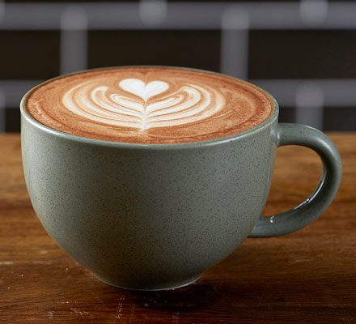

1. Cappuccino

Description:
Cappuccino is a rich and creamy coffee made
with freshly brewed espresso, steamed milk,
and a thick layer of velvety milk foam. It
has a smooth, balanced flavor and is perfect
for starting your day or enjoying as a relaxing
afternoon treat.
2. Café Latte

Description:
Latte is a smooth and comforting coffee drink
made with a shot of espresso and steamed milk,
finished with a light layer of foam. Its mild,
creamy taste makes it an excellent choice for
coffee lovers who enjoy a less intense flavor.
3. Espresso

Description:
Espresso is a bold and concentrated coffee brewed
by forcing hot water through finely ground coffee
beans. It has a rich aroma, intense flavor, and a
smooth crema on top, making it the perfect pick-me-up
for any time of the day.
4. Americano

Description:
Americano is a classic coffee made by combining
freshly brewed espresso with hot water, creating
a smooth and full-bodied drink. It offers the rich
taste of espresso with a lighter texture, making
it ideal for those who enjoy traditional black coffee.
5. Mocha

Description:
Mocha is a delicious blend of espresso, steamed milk,
and rich chocolate, topped with whipped cream or milk
foam. It combines the boldness of coffee with the sweetness
of chocolate, making it a perfect treat for any occasion.
6. Hot Chocolate
Description:
Hot Chocolate is a warm and comforting beverage made
with creamy milk and rich chocolate, creating a smooth
and indulgent drink. It is perfect for those who prefer
a sweet, caffeine-free option and pairs well with cakes
and pastries.